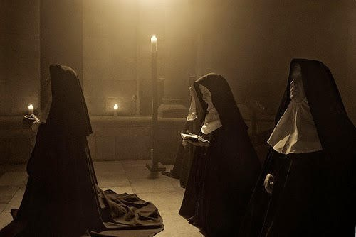

Historia: Monja que practico rituales satanicos.
INC
Remmy_Page 9 Xper Otros Todo el mundo tiene su precio (Howard Hughes)El presente relato con la cita del sr Hughes pues valga decir que cuando se dice que todo el mundo, es todo el mundo, literal... Algunos quiren poder, otros dinero, sexo o salud a cambio de brindar un favor de la naturaleza que sea y si las sircunstancias así lo demandan, sin remordimiento ni reflexión de por medio. A lo largo de la historia muchas personas han sucumbido ante enfermizas ambiciones producidas por envidia, pereza o gula por ejemplo. Lo que da mucho que pensar es que a veces el precio no solo tiene que ver con aquello que se da a cambio de ese deseo que uno tiene y quiere que le cumplan sino con las consecuencias ya que sabemos, toda decisión trae consigo una reacción en cadena. Para muchas personas a lo largo de los siglos ha sido de interés el pacto con entidades desconocidas a cambio de riquezas o poder o lo que sea que cada quien sienta que le hace falta, huelga decir que curiosamente siempre las historias de esta índole terminan mal, gente que termina volviéndose loca, suicidandose o arrepentida de su pacto con demonios comete atrocidades con tal de librarse de su maldición. En México tenemos el caso de Josue Velazquez, un hombre cuya familia era pudiente y que, al caer en un bache económico del que parecían no poder salir nunca, se desesperó y buscó ayuda de seres de bajo astral para poder llegar a buen puerto en el aspecto económico, desatando así un bonche de situaciones horribles como el homicidio de su abuela, su participación en rituales donde se incluía desde luego, sacrificio de bebés según se cuenta, entre otras cosas... Josué pasó gran parte de su vida intentando librarse de su pacto, dijo haber vivido acosado por demonios y aún cuando hace algunos pocos años presumió haberse librado de ellos y de su acuerdo, todavía le faltaba safarse de personalidades poderosas del mundo político y empresarial con quienes había compartido rituales en donde se cometían inconfesables actos de depravación para rendirle pleitesía a seres del inframundo. Hace no mucho estaba curioseando en internet cuando de pronto un mujer madura entabló conversación conmigo pues había compartido una historia local en un foro del tema apranormal.

Ella me contó que en su pueblo (cuyo nombre ya olvidé) hubo un caso aterrador en un convento muy famoso que por petición de importantes autoridades ecleciasticas fue borrado del mapa... Lo que ocurrió ahí fue un secreto que muy pocas personas conocieron, entre ellas la abuela de mi nueva amiga quien era amiga de varias monjas y a veces ayudante del orfanato en el que las hermanas acogían a niños de su territorio y zonas aledañas. Se cuenta que una de las monjas había vivído sirviendo a Dios desde pequeña cuando comenzó a aprender a rezar, a ir a la iglesia acompañando a su madrina todas las mañanas. Era una mujer joven y siempre buscando ayudar a los demás pero poco a poco comenzó a cambiar su trato para con los demás, su actitud era displicente para con su labor y renegaba de su hábito salvo cuando podía sacarle provecho, como cuando la gente le regalaba cosas solo por ser monja y despertar por ello la simpatía de los pobladres. Para algunos expertos en el tema, ella fue influenciada por alguna especie de esencia maligna que, en un acto de vileza la sedujo pues dicen que es muy simple hacerlo con gente común pues tenemos un pie en el infierno, pero aquellos siervos de dios son más difíciles de cazar y por tanto son más deseables.
Sor Sofía era una mujer que sabía convencer con su voz y su mirada tranquila, no había modo de decirle que no a nada que ella pidiera, parecía una niña pequeña pidiendo un dulce. Poco a poco fue arrastrando a sus hermanas a sus prácticas y creencias fuera de lugar para gente así, de poco en poco fueron cayendo en actividades ilícitas para las religiosas como jugar a la ouija, maldecir, blasfemar, comenzaron a aparecer incluso fiestas protagonizadas con rompope o aguardiente; de más está decir que no pasó mucho antes de que esas fiestas terminaran en libertinajes sexuales entre ellas.

Iban cayendo poco a poco en el hoyo en el que pasarían la aternidad pero lo peor de todo vino cuando Sofía les propuso terminar de romper la última barrera de lo permitido para ellas: hacer rituales satánicos utilizando espacios sagrados y utensilios benditos que al final, ensuciaron con sus prácticas.
En el orfanato había decenas de niños y niñas huérfanos a los que nadie iba a extrañar y nadie preguntaría por ellos, así que aprovecharon la ocasión y los utilizaron para ganarse los favores de los demonios a quienes rendían culto. Para cuando esto comenzó a salirse de su cause, varios sacerdotes intentaron entrometerse en el desorden para detener a estas mujeres que ya habían perdido el sentido de moralidad y servicio al divino señor de los cielos pero como no pudieron hacer mucho ante el seductor trato de aquellas depravadas mujeres quienes se aprovecharon de su debilidad carnal para hacerlos parte de su secta y así crecer en influencia y poder dentro de la iglesia. Sor Sofía era quien encabezaba todos los rituales, utilizaban a los niños de las maneras más enfermizas que se pudiera imaginar, terminaban asesinandolos y ofreciendo su sangre a los elementos del infierno a quienes invocaban. Siempre terminaban en orgía y los cuerpos los ocultaban en las paredes del convento, como también escondían los fetos de las monjas producto de las fiestas de perversión. La gente del pueblo no terminaba de entender los cambios de las monjas, todas ellas ahora lucían diferentes, ya no eran serviciales ni tenían la actitud compasiva y amorosa ni para los pueblerinos ni para con su Dios, mucho menos lo respetaban. Nadie se daba cuenta de que en las noches ocurrían cosas retorcidas en aquella iglesia a la que la gente asistía para limpiar su alma, solo sabían que algo andaba mal. Dicen que Sofía se había obsesionado tanto con el tema que a diario jugaba ouija para contactar con algún ser maligno con quien pasaba las horas de la noche dialogando e incluso se dice, copulaban. No se sabe a ciencia cierta quien fue pero alguien delató lo sucedido ante autoridades de la iglesia, enviaron superiores a deshacer malos entendidos si los había o en su defecto a poner orden en el sagrado recinto. Hicieron una revisión exhaustiva en todos los rincones, desde los más obvios hasta los más impensables, enterándose así de los fetos y niños emparedados, crucifijos que habían sido alterados para ser utilizados por las monjas como objetos sexuales, ropas inapropiadas para las féminas, licor que nada tenía que hacer en el lugar, y como no... el lugar donde se realizaban los rituales junto con la ouija de Sofía. Se llevaron a los implicados a algún lugar desconocido todavía por la gente del pueblo, irían a recibir su castigo por habrle dado la espalda a Dios, pero seguramente la peor parte sería para Sofía por ser la agitadora y pervertidora de sus compañeros y compañeras. Las cosas ahí estaban tan horrendas que de tal suerte, enviaron exorcistas a limpiar el espacio manchado por la presencia de vulgaridades y degeneración pero según dicen fue en vano, parapsicólogos actuales indican que las monjas abrieron vórtices difíciles de cerrar, desataron energías obscuras poderosas y el único modo de detenerlo es haciendo un trabajo enorme utilizando a muchas personas de buen corazón, cosa que estimaron difícil e incómodo para la iglesia. Al tiempo se decidió demoler el edificio para solo dejar el baldío y que al tiempo todo se olvidara. Los pobladores no supieron nada excepto que de la noche a la mañana el convento y el orfanato desaparecieron al igual que sus moradores. A la fecha es una historia caasi olvidada y las personas pasan a diario por ahí sin saber que posiblemente están de pie sobre la tumba de muchos niños inocentes que tuvieron la mala fortuna de cruzarse en el camino de dichas lacras. Abundan las historias de avistamientos de una figura femenina que parece monja, incluso algunos temen pasar por ese trecho cuando es de noche y los vecinos no dejan que sus hijos jueguen por ahí, -por cuentos de ancianas- dijo uno de ellos. Lo único que se puede decir es que si la otrora santa mujer de verdad existió ahora mismo debe estar ardiendo por haber manchado tantas almas, quién sabe, igual y en su obsesión siga visitando el pueblo buscando la manera de arrastrar a otros con ella.